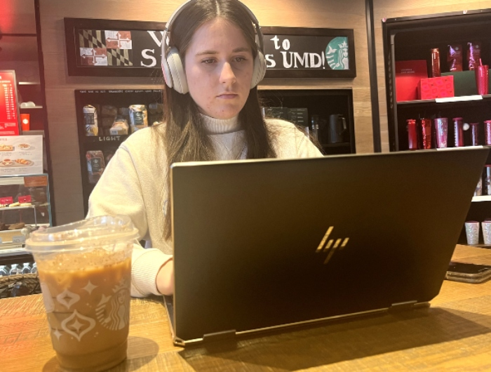

As many college students struggle to navigate their personal lives and rigorous academia, campus counseling centers nationwide are seeing an uptick in visits.
According to a 2021 study from the American College Health Association, nearly three-quarters of college students reported "moderate or severe psychological distress" (American College Health Association, 2021). In a 2021-2022 survey conducted across 133 college campuses, 15% of students reported suicidal ideation, while 44% reported symptoms of depression.
However, the mental health crisis is not a stagnant issue. According to the Center for Collegiate Mental Health, the number of students seeking help through university counseling centers increased by nearly 40% from 2009 to 2015, a rate that has continued to rise post-pandemic.

Senior Hearing and Speech Sciences Major Jasmine Wathen studies inside Starbucks on Route 1 as she prepares for finals week(Jennifer Gable).
Some students contribute the mental health epidemic to increasingly rigorous course loads and impersonal classes.
"I'm going to a class with 300 other people, and my professor will say, 'I'm not accepting emails, and office hours are only once a week for an hour.'... It's just not personal at all," says University of Maryland Sophomore Natalie Wathen. "You feel like you can't really get help anywhere."
Since the COVID-19 pandemic, many courses have also become asynchronous. According to Forbes, in 2021, about 60% of all postsecondary degree seekers in the U.S. took at least some online classes, with around 30% of students studying entirely online.
"In some of my asynchronous classes, I feel like I don't have enough support to complete them, and I don't know where to reach out for help," said University of Maryland Senior Jasmine Wathen. "Unless you have perfect time management, things catch up to you, and the stress builds and builds."
The University of Maryland provides various types of counseling, such as couples, group, and individual counseling. However, the average number of sessions used by an individual is six. When a student's issue requires more extensive care, a referral to an off-campus provider is given. The university refers to this as a "short-term model."
Many universities are struggling to sustain mental health care for their students, unable to provide services to all who need it.
"Being in college is highly stressful, so there should be resources in place for students to use without worrying they will run out," said Jasmine Wathen. "In light of UMD's recent tragedy, action should be taken."
Wathen is referring to the tragic death of a student at The University of Maryland that occurred on October 24. The student was found dead on the north side of the football stadium, according to a campus-wide email.
"Long-term counseling can give students strategies to deal with stress and provide an outlet if there are emergencies," said Jasmine Wathen.
The goal of the University of Maryland counseling center is to "facilitate adjustment to college, reduce emotional distress, and foster resilience to help students continue attending college and pursue their academic, career, and personal goals."
Despite the stress of college, the Wathen sisters say that mental health awareness has become much more prevalent in recent years, which may be why more students nationwide are coming forward for help.
© 2023 Jennifer Gable